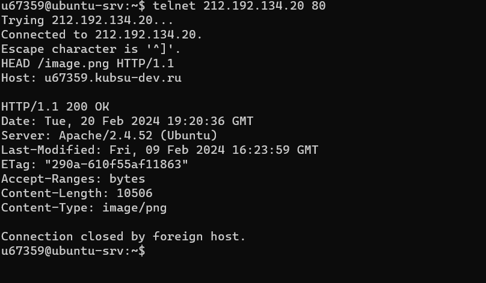

1 получить главную страницу методом GET в протоколе HTTP 1.0;
2 получить внутреннюю страницу методом GET в протоколе HTTP 1.1

3 определить размер файла file.tar.gz, не скачивая его;

4 определить медиатип ресурса /image.png;

5 отправить комментарий на сервер по адресу /index.php;
6 получить первые 100 байт файла /file.tar.gz;

7 определить кодировку ресурса /index.php.